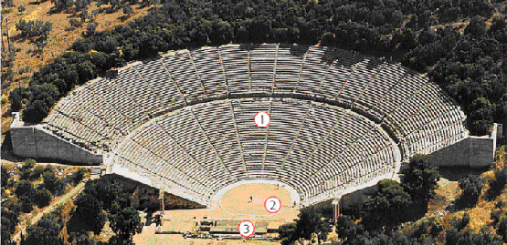
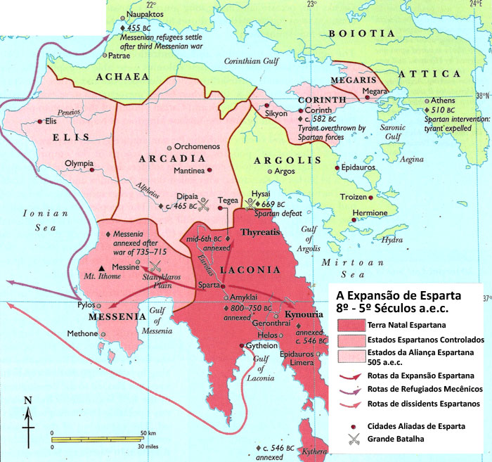

|
|
Grécia
por Luiz Fernando Caldas Gomes

Mapa da Grecia
Antiga
Os Gregos
Nenhuma sociedade, nenhum povo é mais
racional ou criativo do que outro. Afinal, pertencemos todos a mesma
espécie, não é verdade? Por que então os ocidentais veneram tanto os
gregos antigos? Um dos motivos é que somos herdeiros culturais dos
gregos. O idioma português está cheio de palavras derivadas do
grego, como economia, política, biologia, história, física, farmácia
e biblioteca. Na escola, você estuda o teorema de Pitágonas, a lei
de Arquimedes, a geometria de Euclides. Os atores de hoje encenam as
peças de teatro gregas antigas, que parecem falar dos mesmos
problemas dos homens e mulheres atuais. As aventuras de Ulisses,
personagem do poema de Homero, vão para o cinema. As obras
filosóficas de Platão são estudadas por cabeças brilhantes do nosso
tempo. E a quem diga que a democracia nasceu em Atenas. Falar dos
gregos é, de certo modo, falar de nós mesmos.
ORIGENS DA CIVILIZAÇÃO
GREGA
Os
povos indo-europeus - aqueus, jônios, eólios, dórios - começaram a
chegar à Grécia, em sucessivas levas, volta do ano 2000 a.C. Porém,
muito antes da chegada desses povos, a maior ilha grega do mar Egeu
- Creta - já era habitada. Nela desenvolve-se uma brilhante
civilização: a civilização
cretense.
Por volta do
ano 3000 a.C., enquanto no Oriente Médio, às margens dos rios Nilo,
Tigre e Eufrates, os povos dedicavam-se à agricultura e à criação de
animais, na ilha de Creta os habitantes dedicavam-se ao comércio
marítimo e criaram uma cultura
própria.
Constituída
por um povo alegre, festivo e amante da liberdade, a civilização
cretense produziu obras notáveis na pintura, na escultura e na
arquitetura, como os monumentais palácios, luxuosamente decorados.
Expandindo-se pelo
mar, os cretenses estabeleceram contato com outros núcleos urbanos.
Do intenso contato entre cretenses e micênicos nasceu a civilização
creto-micênica.
Aproximadamente em 1400 a.C., Creta foi invadida pelos aqueus, que
acabaram assimilando sua cultura. Quase dois Séculos depois, os
dórios invadiram e ocuparam Creta. As cidades foram saqueadas e
arrasadas, levando à decadência da civilização
cretense.
Desde seus
primeiros povoamentos, havia em Creta pequenos governos locais.
Séculos depois, a ilha foi unificada sob o comando de uma monarquia
instalada na cidade de
Cnossos.
Os chefes que
se sucederam nessa monarquia eram chamados de minos. Essa palavra
deu origem à expressão civilização minóica, também utilizada para
designar a civilização
cretense.
Minos vivia
no grande palácio de Cnossos, cercado de muitas salas luxuosas,
corredores, pátios e oficinas. Eram tantos os aposentos - mais de
1500 cômodos - que esse palácio ficou conhecido, nas lendas gregas,
como o labirinto do
Minotauro.
A sociedade
cretense era predominantemente urbana. As ruínas encontradas revelam
cidades bem planejadas, com ruas, calçadas, sarjetas, lojas de
comércio e casas luxuosas. Destacavam-se, entre elas, Cnossos,
Faístos, Mália e
Tilisso.
A maior parte
da população das cidades dedicava-se ao comércio marítimo ou às
oficinas artesanais, vivendo modestamente e trabalhando para
sustentar o luxo das classes
altas.
Parece, no
entanto, que em Creta a vida das pessoas comuns era melhor que a de
outras comunidades da Antigüidade. Vários aspectos demonstram
isso:
• A economia cretense, baseada no artesanato e no
comércio, proporcionava grande número de ocupações e mais chances de
escolha de trabalho.
• Em Creta existiam poucos escravos, e
eles eram geralmente estrangeiros. A escravidão não foi muito
importante para a vida econômica cretense.
• A liberdade
social das mulheres cretenses, liberdade não encontrada em outras
regiões do mundo antigo, onde as mulheres eram semiescravas dos
homens. As obras de arte de Creta mostram mulheres passeando pelas
ruas, praticando jogos e danças, ocupando lugar de destaque nos
teatros e nos circos. Elas participavam, ao lado dos homens, de
esportes como touradas ou lutas. Havia ainda as sacerdotisas, mais
importantes do que os sacerdotes, que desempenhavam o papel
principal nas cerimônias
religiosas.
Os
cretenses tinham uma economia rica e variada. Praticavam a
agricultura, criavam animais e produziam delicadas peças em cerâmica
ou metal (cobre, bronze, ouro e prata) nas inúmeras oficinas
artesanais.
Mas foi no
comércio marítimo que os cretenses mais se destacaram. Através dele,
toda a produção artesanal era vendida em diversas regiões do mundo
antigo, como Egito e
Mesopotâmia.
Creta
dominou o comércio nos mar Egeu e Mediterrâneo, criando o primeiro
império comercial marítimo do qual temos conhecimento
(aproximadamente dois mil anos antes dos fenícios). A esse império
dá-se o nome de talassocracia, palavra composta dos termos gregos
talassos, que significa mar, e cracia, que significa
poder.
Os povos
indo-europeus estabeleceram-se em diferentes regiões da Grécia.
Atraídos pelo esplendor da civilização cretense, esses povos foram
aos poucos conquistando seu território, até dominá-la completamente
• Aqueus - chegaram por volta de 200 a.C. e fundaram as
cidades de Micenas, Tirinto e Argos. Conquistaram os cretenses e
assimilaram parte de sua cultura. Da integração cultural entre
cretenses e aqueus surgiu a chamada civilização
creto-micênica.
• Jônios - chegaram por volta de 1700 a.C. e
fundaram Atenas. Posteriormente, expandiram-se em direção à Ásia
Menor e fundaram outras cidades, como Mileto, Éfeso e
Esmirna.
• Eólios - Chegaram por volta de 1700 a.C. e
fundaram a cidade de Tebas. Integraram-se no contexto da civilização
creto-micênica.
• Dórios - chegaram por volta de 1200 a.C. e
fundaram Esparta. De espírito guerreiro, destruíram grande parte da
civilização creto-micênica.
Evolução política econômica
A Grécia Antiga, na
verdade, não possuía uma unidade política, ou seja, não constituía
um Estado ou Império único. Era formada por diversas cidades
independentes, com governos próprios. Algumas dessas cidades
conseguiram impor seu domínio sobre as
demais.
Para facilitar
o estudo da história da Grécia, que é longa e complexa, costuma-se
dividi-la em quatro grandes períodos. Vejamos esses períodos que
retratam o apogeu e decadência da civilização grega.
O PERÍODO HOMÉRICO
As principais fontes históricas de informações sobre
o período entre a invasão dórica e a organização das génos foram os
poemas atribuídos a Homero, Ilíada e Odisséia. O primeiro trata da
Guerra de Tróia e do modo de vida dos gregos naquele momento; a
Odisséia fala do retorno dos heróis da guerra e da viagem de
Ulisses.
Com a invasão
dórica, ocorreu um retrocesso da produção material e cultural da
região. O ativo comércio desapareceu e as cidades foram abandonadas.
Houve um retorno ao campo e à vida rural; a sociedade voltou a
organizar-se em padrões mais
simples.
A sociedade
grega neste período homérico passou a se organizar em génos (ou
gens, espécie de clãs), por isso a chamamos de sociedade gentílica.
A génos era uma comunidade formada por uma grande família, chefiada
pelo patriarca. Esses agrupamentos sociais conseguiam assegurar sua
sobrevivência mediante uma atividade coletiva, ou seja, o trabalho,
os bens e a produção eram propriedade de
todos.
A sociedade
gentílica desapareceu por diversos motivos. Naquele período a
produção coletiva não foi capaz de acompanhar o aumento da
população, gerando a fome. Diante desse quadro, os chefes de família
e seus descendentes diretos acabaram acumulando as melhores terras,
formando uma pequena aristocracia comandada pelo basileu (uma
espécie de chefe militar-religioso), que foi se desenvolvendo com o
tempo.
A maioria
empobrecida voltou-se para a atividade artesanal ou então
deslocou-se para outras regiões em busca de novas terras. Toda essa
grave situação gerou inúmeras disputas por terras entre as tribos,
dando condições para o restabelecimento da escravização das tribos
vencidas.
Esse
processo de desagregação das sociedades gentílicas e de reunião das
génos resultou na formação das cidades-Estados gregas.
GUERRA DE TRÓIA

Cavalo de Tróia (reprodução): um presente de grego
A Guerra de Tróia foi um conflito bélico entre aqueus (um dos
povos gregos que habitavam a Grécia Antiga) e os troianos, que
habitavam uma região da atual Turquia. Esta aproximadamente 10 anos,
aconteceu entre 1300 e 1200 a.C. guerra.
Causa da
guerra
Gregos e troianos entraram em guerra por causa do rapto da
princesa Helena de Tróia (esposa do rei lendário Menelau), por Páris
(filho do rei Príamo de Tróia). Isto ocorreu quando o príncipe
troiano foi à Esparta, em missão diplomática, e acabou
apaixonando-se por Helena. O rapto deixou Menelau enfurecido,
fazendo com que este organiza-se um poderoso exército. O general
Agamenon foi designado para comandar o ataque aos troianos. Usando o
mar Egeu como rota, mais de mil navios foram enviados para
Tróia.
A Guerra
O cerco grego à Tróia durou cerca de 10 anos. Vários soldados
foram mortos, entre eles os heróis gregos Heitor e Aquiles (morto
após ser atingido em seu ponto fraco, o calcanhar).
A guerra
terminou após a execução do grande plano do guerreiro grego Odisseu.
Sua idéia foi presentear os troianos com um grande cavalo de
madeira. Disseram aos inimigos que estavam desistindo da guerra e
que o cavalo era um presente de paz. Os troianos aceitaram e
deixaram o enorme presente ser conduzido para dentro de seus muros
protetores. Após uma noite de muita comemoração, os troianos foram
dormir exaustos. Neste momento, abriram-se portas no cavalo de
madeira e saíram centenas de soldados gregos. Estes abriram as
portas da cidade para que os gregos entrassem e atacassem a cidade
de Tróia até sua destruição.
Os eventos finais da guerra são contados na obra Ilíada de
Homero. Sua outra obra poética, Odisséia, conta o retorno do
guerreiro Odisseu e seus soldados à ilha de Ítaca.
Mito ou fato histórico?
Durante muitos séculos, acreditava-se que a Guerra de Tróia fosse
apenas mais um dos mitos da mitologia grega. Porém, com a descoberta
e estudo de um sítio arqueológico na Turquia, pode-se comprovar que
este importante fato histórico da antiguidade realmente ocorreu.
Porém, muitos aspectos entre mitologia e história ainda não foram
identificados e se confundem. Mas o que se sabe é que esta guerra
ocorreu de fato.
PERÍODO ARCAICO

Cidade-Estado
No período arcaico é onde observamos o
processo final das transformações sofridas pelas comunidades
gentílicas gregas. Deixando de adotar o uso coletivo da terra,
começava a aparecer dentro dos genos uma classe de proprietários de
terra. Em sua grande maioria, essa classe aristocrática esteve
intimamente ligada aos pater, o líder patriarcal presente em cada
uma dessas comunidades.
Essa nova classe social, também A
conhecida como eupátridas (filhos do pai ou bem-nascidos) formou
um restrito grupo de proprietários de terra que irão mobilizar-se em
busca da manutenção de suas posses. Os genos passavam a reunir-se em
fratrias e tribos controladas pela dominação da nova aristocracia
grega. Nessa época, além da hegemonia política dos eupátridas,
notamos que o aumento da população causou um grande problema com
relação ao acesso às terras produtivas.
As populações excluídas no processo de apropriação das terras se
viram obrigadas a buscar outras regiões onde fosse possível buscar
melhores condições de vida. A migração dessas populações gregas para
regiões marcou a chamada Segunda Diáspora Grega. Ocorrida em 750
a.C., essa diáspora ampliou os territórios do mundo grego e criou
uma importante rede de comércio de gêneros agrícolas entre as
comunidades gregas.
A consolidação do poder político nas mãos da aristocracia junto
com a ampliação das atividades econômicas deu condições para o
aparecimento de um novo espaço de representação sócio-política na
Grécia: a cidade-estado. As cidades-estado consistiam em núcleos
urbanos onde importantes decisões políticas e o trânsito de
mercadorias acontecia.
Com sua consolidação temos o surgimento de diferentes
cidades-Estado compostas por práticas sociais, políticas e culturais
distintas entre si. De tal maneira, o que observamos dentro do mundo
grego será uma configuração política descentralizada. As diferenças
de organização no mundo grego serão notadas com grande destaque
quando estudamos, por exemplo, as diferenças entre as cidades-Estado
de Esparta e Atenas.
PERÍODO CLÁSSICO
O período conhecido
como Grécia Clássica corresponde ao apogeu da cultura grega
(principalmente de Antenas), interrompido pela conquista macedônica,
mas abrange também acontecimentos como as guerras externas (contra
os persas) e internas (Atenas x
Esparta).
Os conflitos
entre os persas e os gregos (as guerras greco-pérsicas ou médicas)
ocorreram basicamente em razão do expansionismo persa, que já havia
atingido a Ásia Menor e ameaçava a Grécia e seus domínios na
região.
Os persas e os
medos são povos de origem indo-européia, de características
seminômades, que se estabeleceram na Ásia (no atual território do
Irã) por volta de 2000
a.C.
Em 559 a.C.,
chefiados por Ciro, os persas venceram os medos, após anos de
submissão, e partiram a conquista dos assírios, já em franca
decadência.
Esse foi o
início da formação de um grande império que atingiu na Ásia Menor,
Egito, Fenícia, Mesopotâmia e parte da
Grécia.
Dario assumiu
o poder (521-484 a.C.) e comandou a expansão e construção do império
Persa. Ele centralizou a administração do império criando várias
áreas administrativas (satrapias) gerenciadas pelos sátrapas ("os
olhos e os ouvidos do rei"), fez com que fossem construídas inúmeras
vias de comunicação e concentrou o poder em suas
mãos.
As guerras
contra a Grécia começaram devido à política expansionista de Dario
I.
As guerras tiveram
início quando a cidade de Mileto, localizada na Ásia Menor,
revoltou-se contra o domínio persa e buscou a ajuda de Atenas. Dario
I, rei da Pérsia, aproveitou-se do fato para declarar guerra a
Atenas, iniciando a primeira guerra média (os gregos chamavam os
persas de medos, por isso o nome médicas). Essa guerra foi vencida
por Atenas, sob a liderança de Milcíades, na batalha de Maratona
(490 a.C.).
A derrota
persa enfraqueceu o Império, que só teve condições de iniciar a
segunda guerra em 480 a.C., com o filho de Dario, Xerxes. Na
primeira derrotados. No ano seguinte voltaram a atacar Atenas,
alcançando a vitória e destruindo parte da cidade; mas sua frota foi
incendiada em Salamina. Graças a uma aliança de outras cidades
gregas lideradas por Esparta, o exército persa foi derrotado quando
se retirava por terra.
Com a justificativa de se prevenir de novos ataques externos, Atenas
organizou uma grande aliança marítima entre diversas cidades gregas,
chamada de Confederação de Delos. O acordo estabelecia a
independência política e ,militar das cidades, mas elas eram
obrigadas a contribuir com navios, dinheiro e soldados. Levaram
então a guerra às costas da Ásia, e os persas perderam suas
possessões na Ásia Menor. Como centro da Confederação, Atenas foi
muito beneficiada, impulsionando sua economia e cultura. Começava
assim a hegemonia ateniense e seu período de
apogeu.
A cidade de
Atenas atingiu seu apogeu no século V a.C. durante o governo de
Péricles. No seu governo de 461 a 429 a.C., o escravismo chegou ao
auge, dando condições econômicas para o desenvolvimento da
cidade.
As reformas
políticas de Péricles ampliaram a democracia ateniense, permitindo
uma maior participação dos cidadãos mais pobres nas assembléias e
nas decisões de governo. Com relação à política externa, ele
conseguiu estabelecer um grande tratado de paz com a
Pérsia.
A cidade foi
reurbanizada e embelezada; foram construídos grandes monumentos; a
produção artística e literária da época é fantástica. Por tudo isso,
o século V a.C. é conhecido como a idade de
ouro.
Para se
contrapor à hegemonia de Atenas, baseada na Confederação de Delos,
esparta organizou várias cidades na Liga do Peloponeso. Essa luta
pelo poder na região acabou desencadeando a Guerra do Peloponeso
(431-404 a.C.).
Após
inúmeras batalhas entre as duas alianças lideradas por Esparta e
Atenas, finalmente os espartanos saíram vitoriosos em 404 a.C., com
a invasão e destruição de Atenas. Isso significou o fim da hegemonia
de Atenas e, conseqüentemente, da democracia ateniense. A
aristocracia, aliada dos espartanos, voltou ao poder; Esparta
assumiu a liderança política da
Grécia.
O domínio
espartano não durou muito. Os conflitos internos eram constantes,
enfraquecendo o poder de Esparta. Em 371 a.C. ela teve que enfrentar
Tebas, sendo
derrotada.
Até 362
a.C. a cidade-Estado de Tebas manteve fragilmente seu poder. Nesse
ano foi derrotada por uma coligação de várias cidades gregas
liderada por Antenas e Esparta. Esses conflitos internos acabaram
enfraquecendo o mundo grego e decretando o fim da pólis. Em 338 a.C.
Filipe II, rei da Macedônia, região ao norte da Grécia, conquistou
Tebas, iniciando o domínio macedônico.
Guerras Médicas
No decorrer de quase todo século 5 a.C. duas grandes civilizações
se enfrentaram na região do Mediterrâneo Oriental: a Pérsia e a
Grécia. Chamamos esse conflito de Guerras Médicas, Guerras Pérsicas
ou Guerras Greco-Persas.
A principal causa dessas guerras foi a
luta pela independência das  cidades jônicas,
colônias gregas na Anatólia (região da atual Turquia), que os persas
em sua expansão territorial passaram a dominar, comprometendo o
comércio grego no Oriente. cidades jônicas,
colônias gregas na Anatólia (região da atual Turquia), que os persas
em sua expansão territorial passaram a dominar, comprometendo o
comércio grego no Oriente.
A vitória da Grécia garantiu-lhe o
controle comercial da região, imortalizou seus heróis e impôs ao
mundo o modelo ocidental de se fazer a guerra. A maior parte dos
historiadores divide os conflitos em duas fases: a 1 ª Guerra
Médica, em 490 a.C, e a 2 ª Ciro, o Grande (560-530 a.C.), rei dos
medos e persas
Guerra Médica, entre 480 e 479 a.C.. Mas, como as
rivalidades entre gregos e persas só terminaram em 448 a.C., com a
Paz de Cálias, alguns estudiosos falam numa 3 ª Guerra Médica.
Ciro, o Grande (560-530 a.C.), rei dos medos e persas
O Império Persa
No início do primeiro milênio a.C., os
indo-europeus ou arianos, povos originários da região que hoje
chamamos de Rússia, se estabeleceram no planalto Iraniano. Dentre
eles, se destacaram os medos e os persas. Os medos, fortemente
militarizados, mantiveram o domínio sobre a região.
Em 550 a.C., Ciro, o Grande, rei dos persas, conseguiu dominar o
Reino dos Medos e, a partir daí, expandiu seus domínios sobre a
Anatólia (que englobava as cidades jônicas) e a Mesopotâmia,
fundando o Império Persa, com todo poder centralizado em suas mãos.
Posteriormente o Império se tornou grandioso, chegando a dominar
desde o Egito até o vale do rio Indo (na Índia atual). Cada
indivíduo dos povos submetidos pelo Império Persa era considerado um
bandaka (escravo do monarca).
Os gregos antigos não faziam distinção entre os medos e os
persas, por isso terem dado o nome de Guerras Médicas às batalhas
travadas com o Império Persa.
A Grécia
Ao contrário da Pérsia, a Hélade, ou Grécia,
era formada por uma série de cidades independentes que viviam em
constante rivalidade. Para se ter uma idéia, um grego fora de sua
cidade natal era considerado estrangeiro, mesmo estando em uma
cidade grega vizinha a sua.
Cada cidade (pólis) tinha seu próprio exército (falange) e sua
própria organização política, indo desde uma oligarquia conservadora
(Esparta é o maior exemplo) até a democracia, uma inovação política
de Atenas.
De qualquer maneira, independente da forma de governo adotada por
cada pólis, os indivíduos considerados cidadãos tinham ampla
liberdade de discussão nas questões políticas e militares (mesmo que
o seu número fosse reduzido, como por exemplo, em Esparta).
Essa liberdade de expressão (que os gregos chamavam de
parrhesia), era incomum na Antiguidade. Ao contrário da maioria das
civilizações da época, eram os cidadãos que discutiam sobre a
guerra, formavam suas falanges e escolhiam seus generais. Cada
indivíduo lutava por seu ideal político, pela independência de sua
pólis e pela sua própria liberdade (os escravos gregos não eram
aceitos como militares).
Os exércitos
Gregos e persas se
enfrentaram em várias batalhas, e na maior parte delas os persas
contavam com um exército e uma marinha de guerra numericamente muito
superior a dos gregos.
Estima-se que os persas dominavam uma população de 70 milhões de
habitantes, oriundos de diversas culturas, que ofereciam uma
quantidade enorme de soldados, com tipos de armamentos e táticas de
guerra próprios: persas e medos com suas armaduras de escamas de
ferro, assírios com capacetes de bronze, mosquianos com capacetes de
madeira, etíopes que se vestiam com peles de leão, indianos que
usavam arcos, citas com os seus cavalos, dentre inúmeros outros.
A mais importante unidade militar persa era chamada de "Os
Imortais": 10 mil homens (exclusivamente persas e medos), muito bem
preparados. Quando, um de seus membros tombava em combate,
prontamente era substituído por outro.
Mas esse imenso e diversificado exército causou muitos problemas
para o Império Persa nas guerras contra os gregos, pois a falta de
uma língua comum, de treinamento em conjunto e de uma unidade de
comando foi a sua fraqueza, que os gregos souberam muito bem
explorar.
E mais: os combatentes eram obrigados a lutar em nome de um rei
intolerante, que os fazia ir para o campo de batalha debaixo de
chicotadas aplicadas por seus generais e sob ameaça de execução
sumária caso não obedecessem.
Ao contrário, apesar da extrema rivalidade entre as pólis e das
muitas discórdias sobre onde e quando se travarem os combates, as
falanges gregas, quando decididas, lutavam sob uma voz de comando
que unificava todos os homens numa ação coletiva.
Muito bem preparados (já que as guerras eram comuns entre as
cidades-estado gregas e as falanges eram mantidas em constante
treinamento), lutavam em sincronia e tinham um objetivo muito claro:
a manutenção de sua liberdade, já que durante as Guerras Médicas
eram os persas os invasores do solo helênico.
Os soldados gregos contavam com o seu general na frente de
batalha, o que os estimulava a continuar lutando, enquanto o
imperador persa ficava de fora, observando e punindo os que não
correspondiam a suas expectativas.
Era uma vergonha pra um grego fugir do combate, pois isso
significava que ele estaria desistindo do seu bem mais precioso: a
posse de suas terras, sua independência e liberdade política. Os
espartanos, conhecidos por sua cultura militarista, quando saiam em
suas campanhas militares, ouviam de suas mães e esposas: "Volte com
seu escudo, ou sobre ele", pois os cadáveres dos gregos tombados em
combate eram devolvidos a suas famílias em cima de seus escudos.
"Batalha decisiva"
Mas a maior façanha grega era sua forma de guerrear, chamada
pelos historiadores de "batalha decisiva". A maioria das
civilizações do período travava seus combates a certa distância,
usando arcos e projéteis para amedrontar o inimigo. Era uma batalha
de provocações e escaramuças.
Somente quando se tinha certeza da fragilidade do outro lado é
que as tropas avançavam para o choque corpo a corpo. A falange
grega, ao contrário, avançava sobre o inimigo logo de início,
decididos a obter a vitória rapidamente.
Essa tática grega era desconhecida e considerada irracional por
seus inimigos persas. Conta-se que muitos fugiam assustados com a
bravura dos gregos. O resultado de tal embate era mortal: a
violência grega era insuperável.
A própria palavra que denomina as tropas gregas, falange,
significa "rolo", tamanha a velocidade de ataque e o poder de
aniquilamento que detinham. A idéia era chegar ao inimigo o mais
rápido possível e pelo impacto causado pelas primeiras fileiras, ir
abrindo brechas no exército adversário e daí exterminá-lo.
A enorme quantidade de guerreiros persas não suportou a
determinação militar e política dos poucos gregos, e foram vencidos.
O Império Persa acabou por desistir de conquistar a Hélade. Os
gregos mantiveram sua liberdade e passaram a atacar o território
persa, impondo ao mundo sua forma de fazer a guerra.
Guerra do Peloponeso
A Guerra do Peloponeso foi uma
luta de gregos contra gregos, motivada pelo conflito de interesses
econômicos e políticos entre as duas cidades gregas mais
importantes: Atenas e Esparta.
Nessa luta, a Confederação de
Delos, liderada por Atenas, enfrentou a Liga do Peloponeso,
organização nascida da aliança de diversas cidades oligárquicas e
liderada por Esparta.
O conflito entre esses dois blocos de
cidades gregas se arrastou por 27 anos. Provocou a morte de milhares
de civis e terminou com a derrota de Atenas e suas aliadas.
Com
o término da Guerra do Peloponeso, chegou ao fim a hegemonia de
Atenas e teve início a de Esparta, que se aproveitou disso para
impor seu domínio a toda a Grécia, o que provocou a revolta de
outras cidades.
Quando Alexandre morreu, o Império Macedônico
foi dividido em três grandes reinos: Reino do Egito, Reino da Síria
e Reino da Macedônia.
PERÍODO HELENÍSTICO
O período Helenístico
compreende do século III ao século I
a.C.
Depois de tantos
anos de guerras internas, as cidades gregas estavam fracas e
empobrecidas. Aproveitando-se do declínio e da fragilidade das
cidades gregas, o rei Filipe da Macedônia preparou um poderoso
exército para conquistar a Grécia.
A Batalha de
Queronéia (338 a.C.) foi o marco decisivo da vitória dos macedônios
sobre os gregos. Em 336 a.C., o sucessor de Filipe, seu filho
Alexandre Magno, assumiu o trono, dando continuidade à expansão
militar macedônica.
Alexandre sufocou definitivamente as revoltas das cidades gregas
(Tebas e Atenas) e, depois, partiu com um poderoso exército de mais
de 40 mil homens em direção ao Oriente. Obteve brilhantes vitórias
militares na Ásia Menor, no Egito, na Mesopotâmia, na Pérsia e em
regiões da Índia até o vale do rio Indo. Em dez anos, Alexandre
Magno transformou o Império Macedônio em um dos maiores de toda a
Antigüidade.
Em 323
a.C., Alexandre morreu na Babilônia, vítima de uma violenta febre
provocada pela malária. O Império Macedônio foi dividido entre os
principais generais que o acompanharam nas campanhas de conquista:
Seleuco, Ptolomeu e Antígono. Com o tempo, esses generais
tornaram-se reis das regiões que comandavam e passaram a disputar
áreas do antigo Império Macedônio. Posteriormente, a maioria dos
territórios acabou sendo dominada, pouco a pouco, pelos
romanos.
Características dos gregos
Religião grega
Na Grécia Antiga, as pessoas seguiam uma religião politeísta, ou
seja, acreditavam em vários deuses. Estes, apesar de serem imortais,
possuíam características de comportamentos e atitudes semelhantes
aos seres humanos. Maldade, bondade, egoísmo, fraqueza, força,
vingança e outras características estavam presentes nos deuses,
segundo os gregos antigos. De acordo com este povo, as divindades
habitavam o topo do Monte Olimpo, de onde decidiam a vida dos
mortais. Zeus era o de maior importãncia, considerado
a
divindade
seprema do panteão grego. Acreditavam também que, muitas vezes, os
deuses desciam do monte sagrado para relacionarem-se com as pessoas.
Neste sentido, os heróis eram os filhos das divindades com os seres
humanos comuns. Cada cidade da Grécia Antiga possuía um deus
protetor.
Cada entidade divina representava forças da natureza
ou sentimentos humanos. Poseidon, por exemplo, era o representante
dos mares e Afrodite a deusa da beleza corporal e do amor. A
mitologia grega era passada de forma oral de pai para filho e,
muitas vezes, servia para explicar fenômenos da natureza ou passar
conselhos de vida. Ao invadir e dominar a Grécia, os romanos
absorveram o panteão grego, modificando apenas os nomes dos
deuses.
Conheça abaixo uma relação das principais
divindades da Grécia Antiga e suas características.
Zeus - rei de
todos os deuses
Afrodite - amor
Ares - guerra
Hades -
Mortos
Hera - protetora das mulheres, do casamento e do
nascimento
mares e oceanos
Eros - amor, paixão
Apolo
- luz do Sol, poesia, música, beleza
masculina
Mitologia grega
Os gregos criaram vários mitos
para poder passar mensagens para as pessoas e também com o objetivo
de preservar a memória histórica de seu povo. Há três mil anos, não
havia explicações científicas para grande parte dos fenômenos da
natureza ou para os acontecimentos históricos. Portanto, para buscar
um significado para os fatos políticos, econômicos e sociais, os
gregos criaram uma série de histórias, de origem imaginativa, que
eram transmitidas, principalmente, através da literatura oral.
Grande parte destas lendas e mitos chegou até os dias de
hoje e são importantes fontes de informações para entendermos a
história da civilização da Grécia Antiga. São histórias riquíssimas
em dados psicológicos, econômicos, materiais, artísticos,
políticos e culturais.
Entendendo a Mitologia Grega.
Os gregos antigos enxergavam
vida em quase tudo que os cercavam, e buscavam explicações para
tudo. A imaginação fértil deste povo criou personagens e figuras
mitológicas das mais diversas. Heróis, deuses, ninfas, titãs e
centauros habitavam o mundo material, influenciando em suas vidas.
Bastava ler os sinais da natureza, para conseguir atingir seus
objetivos. A pitonisa, espécie de sacerdotisa, era uma importante
personagem neste contexto. Os gregos a consultavam em seus oráculos
para saber sobre as coisas que estavam acontecendo e também sobre o
futuro. Quase sempre, a pitonisa buscava explicações mitológicas
para tais acontecimentos. Agradar uma divindade era condição
fundamental para atingir bons resultados na vida material. Um
trabalhador do comércio, por exemplo, deveria deixar o deus Hermes
sempre satisfeito, para conseguir bons resultados em seu
trabalho.
Os principais seres mitológicos da Grécia Antiga eram:
Heróis : seres mortais, filhos de deuses com seres humanos.
Exemplos : Herácles ou Hércules e Aquiles.
Ninfas : seres
femininos que habitavam os campos e bosques, levando alegria e
felicidade.
Sátiros : figura com corpo de homem, chifres e
patas de bode.
Centauros : corpo formado por uma metade de
 homem e outra de cavalo. homem e outra de cavalo.
Sereias : mulheres
com metade do corpo de peixe, atraíam os marinheiros com seus cantos
atraentes.
Medusa: mulher com serpentes na cabeça.
O Minotauro
É um dos mitos mais conhecidos e já foi tema de filmes, desenhos
animados, peças de teatro, jogos etc. Esse monstro tinha corpo de
homem e cabeça de touro. Forte e feroz, habitava um labirinto na
ilha de Creta. Alimentava-se de sete rapazes e sete
moças gregas, que deveriam ser enviadas pelo rei Egeu ao Rei Minos,
que os enviavam ao labirinto. Muitos gregos tentaram matar o
minotauro, porém acabavam se perdendo no labirinto ou mortos pelo
monstro.
Certo dia, o rei Egeu resolveu enviar para a ilha de
Creta seu filho, Teseu, que deveria matar o minotauro. Teseu recebeu
da filha do rei de Creta, Ariadne, um novelo de lã e uma espada. O
herói entrou no labirinto, matou o Minotauro com um golpe de espada
e saiu usando o fio de lã que havia marcado todo o caminho
percorrido.
Deuses gregos
De acordo com o gregos, os deuses
habitavam o topo do Monte Olimpo, principal montanha da Grécia
Antiga. Deste local, comandavam o trabalho e as relações sociais e
políticas dos seres humanos. Os deuses gregos eram imortais, porém
possuíam características de seres humanos. Ciúmes, inveja, traição e
violência também eram características encontradas no Olimpo. Muitas
vezes, apaixonavam-se por mortais e acabavam tendo filhos com estes.
Desta união entre deuses e mortais surgiam os heróis.
Arte grega
Enquanto a arte egípcia é uma arte ligada ao espírito, a arte
grega liga-se à inteligência, pois os seus reis não eram deuses, mas
seres inteligentes e justos que se dedicavam ao bem-estar do povo. A
arte grega volta-se para o gozo da vida presente. Contemplando a
natureza, o artista se empolga pela vida e tenta, através da arte,
exprimir suas manifestações. Na sua constante busca da perfeição, o
artista grego cria uma arte de elaboração intelectual em que
predominam o ritmo, o equilíbrio, a harmonia ideal. Eles tem como
características: o racionalismo; amor pela beleza; interesse pelo
homem, essa pequena criatura que é “a medida de todas as coisas”; e
a democracia.
Arquitetura
 Stoa de
Olímpia Stoa de
Olímpia
As edificações que despertaram maior interesse são os
templos. A característica mais evidente dos templos gregos é a
simetria entre o pórtico de entrada e o dos fundos. O templo era
construído sobre uma base de três degraus. O degrau mais elevado
chamava-se estilóbata e sobre ele eram erguidas as colunas. As
colunas sustentavam um entablamento horizontal formado por três
partes: a arquitrave, o friso e a cornija. As colunas e entablamento
eram construídos segundo os modelos da ordem dórica, jônica e
coríntia.
- Ordem Dórica - era simples e maciça. O fuste da
coluna era monolítico e grosso. O capitel era uma almofada de pedra.
Nascida do sentir do povo grego, nela se expressa o pensamento.
Sendo a mais antiga das ordens arquitetônicas gregas, a ordem
dórica, por sua simplicidade e severidade, empresta uma idéia de
solidez e imponência
- Ordem Jônica - representava a graça e o
feminino. A coluna apresentava fuste mais delgado e não se firmava
diretamente sobre o estilóbata, mas sobre uma base decorada. O
capitel era formado por duas espirais unidas por duas curvas. A
ordem dórica traduz a forma do homem e a ordem jônica traduz a forma
da mulher.
- Ordem Coríntia - o capitel era formado com folhas
de acanto e quatro espirais simétricas, muito usado no lugar do
capitel jônico, de um modo a variar e enriquecer aquela ordem.
Sugere luxo e ostentação.
Os principais monumentos da
arquitetura grega:
a) Templos, dos quais o mais importante
é o Partenon de Atenas. Na Acrópole, também, se encontram as
Cariátides homenageavam as mulheres de Cária.
b) Teatros,
que eram construídos em lugares abertos (encosta) e que compunham de
três partes: a skene ou cena, para os atores; a konistra ou
orquestra, para o coro; o koilon ou arquibancada, para os
espectadores. Um exemplo típico é o Teatro de Epidauro, construído,
no séc. IV a.C., ao ar livre, composto por 55 degraus divididos em
duas ordens e calculados de acordo com uma inclinação perfeita.
Chegava a acomodar cerca de 14.000 espectadores e tornou-se famoso
por sua acústica perfeita.
c) Ginásios, edifícios
destinados à cultura física.
d) Praça - Ágora onde os
gregos se reuniam para discutir os mais variados assuntos, entre
eles; filosofia.
Pintura
Hoplitas
A pintura grega encontra-se na arte cerâmica. Os vasos gregos são
também conhecidos não só pelo equilíbrio de sua forma, mas também
pela harmonia entre o desenho, as cores e o espaço utilizado para a
ornamentação. Além de servir para rituais religiosos, esses vasos
eram usados para armazenar, entre outras coisas, água, vinho, azeite
e mantimentos. Por isso, a sua forma correspondia à função para que
eram destinados:
- Ânfora - vasilha em forma de coração,
com o gargalo largo ornado com duas asas;
- Hidra - (derivado de
ydor, água) tinha três asas, uma vertical para segurar enquanto
corria a água e duas para levantar;
- Cratera - tinha a
boca muito larga, com o corpo em forma de um sino invertido, servia
para misturar água com o vinho (os gregos nunca bebiam vinho puro),
etc.
As pinturas dos vasos representavam pessoas em suas
atividades diárias e cenas da mitologia grega. O maior pintor de
figuras negras foi Exéquias.
A pintura grega se divide em três
grupos:
1) figuras negras sobre o fundo vermelho
2) figuras vermelhas sobre o fundo negro
3)
figuras vermelhas sobre o fundo branco
Escultura
 Relevo dedicado a
Asclépio Relevo dedicado a
Asclépio
A estatuária grega representa os mais altos padrões já atingidos
pelo homem. Na escultura, o antropomorfismo - esculturas de formas
humanas - foi insuperável. As estátuas adquiriram, além do
equilíbrio e perfeição das formas, o movimento.
No Período
Arcaico os gregos começaram a esculpir, em mármores, grandes figuras
de homens. Primeiramente aparecem esculturas simétricas, em rigorosa
posição frontal, com o peso do corpo igualmente distribuído sobre as
duas pernas. Esse tipo de estátua é chamado Kouros (palavra grega:
homem jovem).
No Período Clássico passou-se a procurar movimento
nas estátuas, para isto, se começou a usar o bronze que era mais
resistente do que o mármore, podendo fixar o movimento sem se
quebrar. Surge o nu feminino, pois no período arcaico, as figuras de
mulher eram esculpidas sempre vestidas.
Período
Helenístico podemos observar o crescente naturalismo: os seres
humanos não eram representados apenas de acordo com a idade e a
personalidade, mas também segundo as emoções e o estado de espírito
de um momento. O grande desafio e a grande conquista da escultura do
período helenístico foi a representação não de uma figura apenas,
mas de grupos de figuras que mantivessem a sugestão de mobilidade e
fossem bonitos de todos os ângulos que pudessem ser observados.
Os principais mestres da escultura clássica grega são:
-
Praxíteles, celebrado pela graça das suas esculturas, pela lânguida
pose em “S” (Hermes com Dionísio menino), foi o primeiro artista que
esculpiu o nu feminino.
- Policleto, autor de Doríforo -
condutor da lança, criou padrões de beleza e equilíbrio
através do tamanho das estátuas que deveriam ter sete vezes e meia o
tamanho da cabeça.
- Fídias, talvez o mais famoso de todos,
autor de Zeus Olímpico, sua obra-prima, e Atenéia. Realizou toda a
decoração em baixos-relevos do templo Partenon: as esculturas dos
frontões, métopas e frisos.
- Lisipo, representava os homens
“tal como se vêem” e “não como são”
(verdadeiros retratos). Foi Lisipo que introduziu a proporção ideal
do corpo humano com a medida de oito vezes a cabeças. “não como são”
(verdadeiros retratos). Foi Lisipo que introduziu a proporção ideal
do corpo humano com a medida de oito vezes a cabeças.
- Miron,
autor do Discóbolo - homem arremessando o disco. (figura)
Teatro Grego
Um dos aspectos mais significativos da cultura grega antiga
foi o teatro. Os gregos o desenvolveram de tal forma que até os dias
atuais, artistas, dramaturgos e demais envolvidos nas artes cênicas
sofrem a influência suas influências. Diversas peças teatrais
criadas na Grécia Antiga são até hoje encenadas.
O teatro
grego surgiu a partir da evolução das artes e cerimônias gregas
como, por exemplo, a festa em homenagem ao deus Dionísio (deus do
vinho e das festas). Nesta festa, os jovens dançavam e cantavam
dentro do templo deste deus, oferecendo-lhe vinho. Com o tempo, esta
festa começou a ganhar uma certa organização, sendo representada
para diversas pessoas.
Durante o período clássico da história da
Grécia (século V a.C.) foram estabelecidos os estilos mais
conhecidos de teatro: a tragédia e a comédia. Ésquilo e Sófocles são
os dramaturgos de maior importância desta época. A ação, diversos
personagens e temas cotidianos foram representados nos teatros
gregos desta época.
Nesta época clássica foram construídos
diversos teatros ao ar livre. Eram aproveitadas montanhas e colinas
de pedra para servirem de suporte para as arquibancadas. A acústica
(propagação do som) era perfeita, de tal forma que a pessoa sentada
na última fileira (parte superior) podia ouvir tão bem a voz dos
atores, quanto quem estivesse sentado na primeira fileira.
Os
atores representavam usando máscaras e túnicas de acordo com o
personagem. Muitas vezes, eram montados cenários bem decorados para
dar maior realismo à encenação.
Os temas mais representados nas
peças teatrais gregas eram: tragédias relacionadas a fatos
cotidianos, problemas emocionais e psicológicos, lendas e mitos,
homenagem aos deuses gregos, fatos heróicos e críticas humorísticas
aos políticos. Os atores, além das máscaras, utilizam muito os
recursos da mímica. Muitas vezes a peça era acompanhada por músicas
reproduzidas por um coral.

Teatro de Epidauro

Ruínas de um teatro grego de
Epidauro.
Filosofia grega
A filosofia tem uma história de mais
de dois mil e quinhentos anos. Foi na Grécia Antiga que esta ciência
surgiu e tomou as primeiras proporções. Embora vivessem em
cidades-nações distintas e rivais entre si, os gregos conseguiram
desenvolver uma comunidade única de língua, religião e cultura, que
foi responsável pelo grande avanço da ciência na Idade Antiga. A
genialidade grega foi responsável pelo avanço de diversas áreas do
conhecimento, como artes, literatura, música e filosofia.
A filosofia grega pode ser dividida em três fases: período
pré-socrático, socrático e helenístico. No período pré-socrático, a
Filosofia foi utilizada para explicar a origem do mundo e das coisas
ao redor. Os pré-socráticos buscavam um princípio que deveria ser
presente em todos os momentos da existência de tudo. Os principais
filósofos dessa fase foram: Tales de Mileto, Heráclito, Anaximandro,
Xenófanes e Parmênides.
O período socrático foi caracterizado pela mudança em relação ao
objeto de estudo da filosofia, passando da metafísica para o homem
em si. Esse caráter antropológico se deu através dos três principais
filósofos gregos: Sócrates, Platão e Aristóteles.
O período helenístico compreende desde o final do Século III a.C
até o Séc. II d.C. Essa fase foi marcada pela associação da visão
cristã à filosofia, passando a crer mais em soluções individuais que
coletivas. Entre os filósofos deste período, podemos citar: Marco
Aurélio, Séneca, Epíteto, Lucano, Pirro de Elis, Antístenes,
Diógenes de Sínope, etc.
Esportes
Foram os gregos que desenvolveram os Jogos
Olímpicos. Aconteciam de quatro em quatro anos na cidade grega de
Olímpia. Era uma homenagem aos deuses, principalmente a Zeus (deus
dos deuses). Atletas de diversas cidades gregas se reuniam para
disputarem esportes como, por exemplo, natação, corrida, arremesso
de disco entre outros. Os vencedores das Olimpíadas eram recebidos
em suas cidades como verdadeiros heróis.

Principais cidades-Estado gregas
- ESPARTA

Esparta foi uma das principais polis (cidades-estado)
da Grécia Antiga. Situava-se geograficamente na região sudeste da
Península do Peloponeso.
Destacou-se no aspecto militar, pois foi fundada pelos
dórios.
A cidade de Esparta foi fundada no século IX a C pelo
povo dório que penetrou pela península em busca de terras férteis.
Quatro aldeias da região da Lacônia uniram-se para formar a cidade
de Esparta. A cidade cresceu nos séculos seguintes e o aumento
populacional fez com que os espartanos buscassem a ampliação de seu
território através de guerras. No final do século VIII aC, os
espartanos conquistaram toda a planície da Lacônia. Nos anos
seguintes, Esparta organizou a formação da Liga do Peloponeso,
reunindo o poderio militar de várias polis da região, exceto a rival
Argos.
O poder militar de Esparta foi extremamente importante nas
Guerras Médicas (contra os persas). Uniu-se a Atenas e outras
cidades para impedir a invasão do inimigo comum. O exército
espartano foi fundamental na defesa terrestre (Atenas fez a defesa
marítima) durante as batalhas. Após as Guerras Médicas, a luta pela
hegemonia no território grego colocou Atenas e Esparta em posições
contrárias. De 431 a 404, ocorreu a Guerra do Peloponeso entre
Atenas e Esparta, que foi vencida pelos espartanos.
Sociedade Espartana
Em Esparta a sociedade era estamental, ou seja,
dividida em camadas sociais onde havia pouca mobilidade. A sociedade
estava composta da seguinte forma:
Esparcíatas: eram os cidadãos de Esparta. Filhos de mães e
pais espartanos, haviam recebido a educação espartana. Esta camada
social era composta por políticos, integrantes do exército e ricos
proprietários de terras. Só os esparcíatas tinham direitos
políticos.
Periecos: eram pequenos comerciantes e artesãos. Moravam na
periferia da cidade e não possuíam direitos políticos. Não recebiam
educação, porém tinham que combater no exército, quando convocados.
Eram obrigados a pagar impostos.
Hilotas: levavam uma vida miserável, pois eram obrigados a
trabalhar quase de graça nas terras dos esparcíatas. Não tinham
direitos políticos e eram alvos de humilhações e massacres. Chegaram
a organizar várias revoltas sociais em Esparta, combatidas com
extrema violência pelo exército.
Educação Espartana
O princípio da educação espartana era formar bons soldados para
abastecer o exército da polis. Com sete anos de idade o menino
esparcíata era enviado pelos pais ao exército. Começava a vida de
preparação militar com muitos exercícios físicos e treinamento. Com
30 anos ele se tornava um oficial e ganhava os direitos políticos. A
menina espartana também passava por treinamento militar e muita
atividade física para ficar saudável e gerar filhos fortes para o
exército.
Política Espartana
Reis: a cidade era governada por dois reis que possuíam funções
militares e religiosas. Tinham vários privilégios.
Assembléia: constituída pelos cidadãos, que se reuniam na Apella
(ao ar livre) uma vez por mês para tomar decisões políticas como,
por exemplo, aprovação ou rejeição de leis.
Gerúsia: formada por vinte e oito gerontes (cidadãos com mais de
60 anos) e os dois reis. Elaboram as leis da cidade que eram votadas
pela Assembléia.
Éforos: formado por cinco cidadãos, tinham diversos poderes
administrativos, militares, judiciais e políticos. Atuavam na
política como se fossem verdadeiros chefes de governo.
Religião Espartana
Assim como em outras cidades da Grécia Antiga, em Esparta a
religião era politeísta (acreditavam em vários deuses). Arqueólogos
encontraram diversos templos nas ruínas de Esparta. Atena (deusa da
sabedoria) era a mais cultuada na cidade.
- PÉRGAMO
A cidade de Pérgamo é a
soma dos traços residuais trazidos dos períodos anteriores à Era
Helenística (acrópole: parte mais antiga da cidade) com novos planos
urbanos (cidade mediana), que constituíam a expressão direta de uma
sociedade essencialmente mercantil. O enfoque urbanístico principal
da pesquisa se dá no contexto da cidade helenística.
Pérgamo,
cidade rica e antiga da Ásia Menor situada próximo à costa ocidental
da Ásia Menor, em Mísia (agora Turquia), mais tarde capital do reino
de Pérgamo (241-133 a.C).

Política
Adquiriu importância por volta do século III a.C.
com a chegada da Era Helenística. Foi governada pela dinastia dos
Atálidas antes do domínio de Roma (133
a.C.):
•
Átalo I Sóter (269-197 a.C.), rei de Pérgamo na Ásia Menor, sucedeu
seu primo Eumênio I (241 a.C.). Depois de vencer os gálatas e seu
aliado, o selêucida Antíoco Hierax (em 228 a.C.), tornou Pérgamo o
Estado mais importante da Ásia
Menor.
•
Átalo II Filadelfo (220-138 a.C.), rei de Pérgamo, sucessor de seu
irmão Eumênio II (em 160 a.C.). Pupilo do filósofo Carnéades, a quem
dedicou um portal (stoa), atualmente reconstruída, na Ágora
ateniense.
Cultura
Foi cidade rival literária de
Alexandria nos séculos III e II a.C., onde existiu um sério grupo de
pesquisadores. Esses homens estudavam gramática, crítica literária,
arte e filosofia. Um dos eruditos mais proeminentes de Pérgamo foi
Crates de Malo que favoreceu as interpretações alegóricas, e não
literais, dos trabalhos de Homero.
Construções importantes
A antiga cidade de Pérgamo foi um importante centro da
cultura grega, possuindo uma grande biblioteca e um altar dedicado a
Zeus, tipologias arquitetônicas novas (Era Helenística), como os
ginásios e os edifícios para o Senado, profusamente decorados e
realizados na ordem coríntia.
Plano Urbanístico
Com a chegada da Dinastia dos Atálidas era grande o interesse
em desintegração a sociedade, já que era conhecida justamente por
quatro caracteres: a unidade (não existem zonas fechadas e
independentes, e em algumas áreas toda a população ou grande parte
dela pode reunir-se e reconhecer-se como urna comunidade orgânica),
a articulação (cidade se divide em três zonas: as áreas privadas
ocupadas por casas de moradia; as áreas sagradas, que são recintos
com os templos dos deuses; e as áreas públicas, destinadas às
reuniões políticas, ao comércio, ao teatro, aos jogos desportivos,
etc), o equilíbrio com a natureza (respeita as linhas gerais da
paisagem natural, que em muitos pontos significativos é deixada
intacta, interpreta-a e integra-a, com os manufaturados
arquitetônicos), e o limite de crescimento (o crescimento da
população não produz uma ampliação gradativa, mas a adição de um
outro organismo equivalente ou mesmo maior que o primitivo). Esta
desarticulação veio através do plano urbano da seguinte
maneira:
• Introdução da
Ágora (ver anexo 1) para o fortalecimento do comércio, o que
produziu uma laboriosa classe média, acostumada aos confortos e
luxos físicos, que por muito tempo não tiveram, tirando as atenções
dos cidadãos da vida política e ainda fez com que a cidade estivesse
sempre cheia de mercadores
estrangeiros.
• Um extenso
programa de construção e embelezamento da cidade para mascarar o
sistema de arregimentação e exploração, mostrando desta forma o
poder da monarquia

Planta da Cidade Mediana de Pérgamo.
EPIDAURO
Era uma cidade da Grécia antiga, situada na
Argólida, às margens do Mar Egeu e célebre pelo santuário de
Esculápio, deus da Medicina, que atraía doentes de todo o mundo. Seu
teatro ao ar livre está bem conservado. Fundada pelos jônicos, foi
ocupada pelos dóricos e aliou-se a Esparta, perdendo sua importância
com o desenvolvimento da cidade de Egina, na ilha de mesmo nome.
Decaiu com a conquista romana.
Anfiteatro de Epidauro
Famoso
também é o Anfiteatro de Epidauro, dos maiores de seu tipo e de seu
tempo, possuía uma acústica considerada perfeita para a época,
reproduzindo com precisão e, principalmente, de forma audível, mesmo
o som de um alfinete jogado ao chão, que podia ser ouvido mesmo nas
últimas bancadas.
História
Epidauro é citada no Catálogo de navios (na
secção que se encontra no canto II da Ilíada de Homero) com,
Epidauro dos bons vinhedo.Nos séculos VII a.C. e VI a.C., pertencia
à anfictionia chamada dos Minianos, cuja fixação era na ilha de
Calauria. Em finais do século VI a.C., era governada pelo tirano
Procles, que deu sua filha Melisa em casamento a Periandro, tirano
de Corinto. Periandro atacou Epidauro e fez prisioneiro Procles
conquistando a cidade. Depois da tirania voltou a oligarquia. 
Na época histórica, oligarcas
dóricos continuaram a ser os dirigentes da cidade, que era uma das
principais cidades comerciais do Peloponeso. Epidauro colonizou
Egina, que durante muito tempo foi uma dependência. Também colonizou
Cós, Calimnos (Calidnos) e Nisiros, mas quando o comércio cresceu,
Egina aumentou a sua importância e suplantou a metrópole no século
VI a.C.
Epidauro foi sempre fiel aliada de Esparta enquanto que
com a sua metrópole, Argos, rompeu relações depois da instauração
nesta cidade da democracia. A cidade de Epidauro era governada por
artinos (artynae) que presidiam um conselho de 180 membros; os
habitantes originais não dórios eram os konipodes que trabalhavam a
terra para os seus amos dórios, mas não eram escravos.
Nas
Guerras Médicas, a cidade enviou oito navios para a Batalha de
Artemisio, 800 homens para Platea e 10 barcos para Salamina. Ao
terminar a guerra, Salamina aliou-se com Esparta e entrou na Liga do
Peloponeso, contra Atenas e a confederação de Delos. Tomou parte no
assunto de Corcira e proporcionou trirremes a Corinto.
Epidauro constituiu um ponto nevrálgico do confronto entre Atenas e
Esparta.
Em 419 a.C., durante a Guerra do Peloponeso, os argivos
tentaram conquistar a cidade, mas foram repelidos.
Já na época
clássica, Epidauro gozou de um grande prestígio graças ao seu
santuário consagrado a Esculápio, onde se praticava a medicina pela
interpretação dos sonhos. Compreendia vários edifícios públicos,
entre os quais havia um grande templo construido no século IV a.C..
Em honra de Esculápio se organizavam as Asklepieia, Jogos
Pan-helénicos pentétericos que compreendia corridas de cavalo e, a
partir do século IV, concursos de poesia. O culto de Esculápio teve
o seu apogeu na época helenística.
Em 243 a.C., Epidauro reuniu a
Liga Aqueia. No Verão de 225 a.C. foi tomada por Cleómenes III, rei
de Esparta. Converteu-se em aliada da República de Roma.
Sob
domínio romano tinha perdido toda a importância e era praticamente o
porto do templo de Esculápio. Pausânias dá uma lista de seus
edifícios principais: o templo de Atena Cisea na acrópole, o templo
de Dionísio, o de Artemisa, o de Afrodite, e talvez o de Esculápio;
e o de Hera no porto, provavelmente no actual Cabo
Nicolau.
Na cidade havia também ginásio, palestra, teatro,
construído aproveitando a vertente de uma montanha, com um diâmetro
de 112 metros e 32 filas de assentos na parte baixa, 20 na parte
central e 24 na superior, com capacidade para 12.000 espectadores e
o proscénio.
Cipião Emiliano visitou-a em 168-167 a.C., na mesma
época que outros grandes lugares do helenismo, como Atenas, Delfos e
Olímpia. Em 87 a.C., é arrasada por Silas, que saqueou o tesouro do
templo. A última menção de Epidauro remonta ao século VI, no
Synekdemos de Hierócles, uma obra que descreve as divisões
administrativas do Império Bizantino.
OLÍMPIA
Cidade da antiga Grécia, é famosa por ter sido o local onde
se realizavam os Jogos Olímpicos da antiguidade até sua supressão em
394 pelo imperador Teodósio I, tendo na altura uma importância
comparável à de Delfos, onde se realizavam os Jogos Pítios. Olímpia
também é conhecida pela gigantesca estátua de Zeus em marfim e ouro,
criada pelo escultor Fídias para o templo do deus, e que foi uma das
sete maravilhas do mundo antigo. Hoje o local preserva um
importantíssimo sítio arqueológico tombado pela UNESCO.

As ruínas
do Templo de Hera
Pré-história
Foram encontrados vestígios de alimentos e oferendas
incineradas datando do século X a.C., evidenciando uma longa
história de ocupação humana no local, embora não tenham restado
traços de edificações desta época remota.
Períodos Geométrico e Arcaico
O primeiro festival Olímpico foi organizado
pelas  autoridades de Elis no século VIII a.C. com os
primeiros Jogos Olímpicos sendo realizados, de acordo com a
tradição, em 776 a.C.. Em torno de 700 a.C. foram feitas reformas no
terreno, nivelando áreas e cavando canais, época em que o santuário
caiu nas mãos dos pisatanos, que continuaram a realizar os Jogos até
o fim do século. autoridades de Elis no século VIII a.C. com os
primeiros Jogos Olímpicos sendo realizados, de acordo com a
tradição, em 776 a.C.. Em torno de 700 a.C. foram feitas reformas no
terreno, nivelando áreas e cavando canais, época em que o santuário
caiu nas mãos dos pisatanos, que continuaram a realizar os Jogos até
o fim do século.
O Bouleterion
Os primeiros edifícios foram construídos em torno de 600
a.C., quando os skiludianos, aliados dos pisatanos, ergueram o
Templo de Hera, seguido pelos Tesouros e pelo Pelopion, e também
pelas estruturas profanas das arenas e do Bouleterion. O primeiro
estádio foi construído em torno de 560 a.C. como uma simples faixa
de terra, que foi remodelada cerca de 60 anos depois com a adição de
elevações laterais para os espectadores. Em 580 a.C. Elis, em
aliança com Esparta, reconquistou o santuário.
Período Clássico
Este foi o período em que Olímpia conheceu seu
esplendor. Entre os séculos V e IV a.C. foram erguidos uma série de
novos edifícios sacros e seculares, incluindo o Templo de Zeus,
cujas proporções e decoração atingiram uma magnificência até então
inaudita. Também as estruturas desportivas foram ampliadas e
completadas. O Pritaneu foi levantado em 470 a.C., o Metroon em 400
a.C., e a Stoa Eco na mesma época.
O Philippeion
O final do século IV a.C. viu o surgimento do Philippeion, e logo
em seguida do maior edifício do local, o Leonidaion, para receber
visitantes ilustres. Nos dois séculos seguintes apareceram a
Palestra, o Gymnasion, as casas de banhos e a Cripta, uma passagem
de arcos ligando a entrada do santuário ao estádio.
O Templo de Zeus
O Templo de Zeus em Olímpia (ou Olympieum)
era o centro religioso do local e foi construído entre 470 a.C. e
456 a.C. pelo arquiteto Libon de Elis. Foi constuído na ordem dórica
e tinha seis colunas frontais e treze de cada lado, e única entrada
era na fachada oriental, à qual se tinha acesso por uma grande
rampa. Os pedimentos mostravam a corrida de bigas entre Pélops,
criador dos Jogos Olímpicos, e Enômao, rei de Pisa, e as métopas
estavam decoradas com as cenas dos "doze trabalhos de
Hércules".
O grande atrativo para os visitantes do templo era a
monumental estátua de Zeus, do escultor Fídias: possuía doze metros
de altura e era toda de ouro e marfim. Não era sem motivo que era
uma das sete maravilhas do mundo antigo. A estátua foi destruída em
um incêndio e o templo pereceu num terremoto no século V d.C. Porém
o geógrafo grego Pausânias, em sua Descrição da Grécia, nos deu uma
visão detalhada do templo, o que nos possibilita reconstruí-lo em
seu aspecto original.
- ATENAS
A vida civil de Atenas foi muito diferente do
viver militar dos espartanos.
Atenas era uma cidade jônica,
situada na pequena península da Ática. Desde os tempos dos antigos,
seus habitantes se entregavam a navegação marítima e, em contato com
outros povos de civilizações adiantadas aprenderam e desenvolveram
os elementos de uma vida espiritual e materialmente superior.
As
tradições davam a cidade como fundada por Cécrope, colono egípcio.
Um dos seus monarcas lendários teria sido o herói Teseu. O último
desta fase foi Codro que sacrificou a própria vida para salvar o
país da invasão dos dórios. A fim de honrar-lhes a memória, os
atenienses aboliram a realeza, declararam que ninguém possuía
dignidade bastante para substituir um rei com aquelas qualidades.
A organização social de Atenas
A população de Atenas dividia-se em três classes: cidadãos,
metecos e escravos.
A cidadania era um privilégio que se
adquiria pelo nascimento. Somente filhos de pai e mãe
atenienses se reservava o direito de serem cidadãos. Os estrangeiros
e seus descendentes, domiciliados em Atenas, formavam a classe dos
metecos, excluídos, como os escravos, da vida política. Diz-se em
resumo, que em Atenas, todos cidadãos tinham direitos políticos, mas
nem todos habitantes eram cidadãos.

Acrópole de Atenas
- Vista aérea
A organização política de Atenas
Tal como nas demais cidades da Hélade, havia em Atenas a classe
dos aristocratas, os eupátridas (bem nascidos), como ali eram
chamados. Estes, apos a morte de Codro, elegeram um magistrado
vitalício, com o título de Arconde, responsável pelo governo, mas
despojado das prerrogativas reais. Mas tarde, tornaram aquele cargo
temporário, limitando-o a dez anos de mandato. Por fim, o Arcontado
foi anual e passou a ser exercido por nove arcondes, um dos quais
chamado arconde-rei, encarregado das funções religiosas.
Ao lado
do Arcontado, com poderes administrativos militares e religiosos,
funcionava o Aerópago, assembléia ou conselho formado pelos
ex-arcondes, com poderes judiciários e também políticos.
As primeiras leis escritas
O governo dos nobres era opressor e indiferente à sorte do povo.
Com o tempo, formou-se uma nova classe social: a dos comerciantes e
de industrias que desejavam participar dos atos de governo.
Uniram-se, por isso, aos demais e deram começo a uma série de lutas,
visando a melhores condições de vida de toda a população. No século
VII a.C., surgiram as primeiras leis escritas, atribuídas a Drácon e
que se tornaram famosas pela severidade e rigor. era um passo à
frente na conquista dos direitos humanos, embora a maior parte das
coisas se mantivessem praticamente no mesmo estado
anterior.
Sólon
Em 594 a.C., os atenienses elegeram para o Arcontado um dos "sete
sábios da Grécia", Sólon, homem de grande inteligência, que realizou
importante reforma no sentido democrático, inspirado no desejo de
favorecer os direitos do povo. Começo por libertar os devedores
reduzidos à escravidão, suprimindo o cativeiro por dívidas; garantiu
a liberdade individual; estabeleceu um imposto progressivo sobre os
rendimentos, para o que dividiu os cidadãos em quatro categorias,
repartindo entre estas os cargos e os direitos em forma proporcional
e eqüitativa.
Os poderes do governo foram divididos em quatro
corpos políticos: o Arcontado, o Bulé, a Eclésia e o Aerópago.
Para o primeiro, só podiam ser eleitos os cidadãos da primeira
classe, isto é, os mais ricos; o Bulé, era um conselho de 400
cidadãos, eleitos entre os membros das primeiras três classes, a
Eclésia, ou assembléia do povo , pertenciam vinte mil cidadãos,
incluindo-se os que nada possuíam. O Aerópago manteve a estrutura
anterior.
Pisístrato
As reformas de Sólon originaram descontentamento: os eupatridas
se viram prejudicados e o povo achou que devia ter mais direitos.
Das lutas aproveitou Pisístrato, jovem endinheirado que, apoiado no
partido popular, apoderou-se do governo.
Deu-se- o qualificativo
de tirano, que, como sabemos, designava os que se elevavam ao poder
por meios irregulares.
Pisístrato administrou com justiça e
acerto, respeitando as leis de Sólon e procurando melhorar as
condições dos menos favorecidos. A ele se atribui a iniciativa de
determinar a compilação das obras de Homero. quando morreu,
sucederam-lhe os filhos Hiparco e Hípias: aquele foi morto numa
conjuração e este foi obrigado a fugir, por força de uma sublevação
de nobres atenienses (510 a.C.).
A democracia ateniense
O governo de Atenas coube, depois de algumas lutas, a Clístenes,
homem de origem aristocrática, mas de tendências populares. Nomeado
arconde realizou reformas políticas de grande importância, aboliu a
divisão de classes e permitiu que todos os domiciliados em Atenas
fossem considerados cidadãos. Depois dividiu politicamente o
território dez tribos com direitos iguais e deu à Eclésia maior
qualidade de poderes.
Para evitar influências de indivíduos que
pudessem atentar contra a liberdade instituiu o ostracionismo,
votação realizada pela Eclésia, que tinha por fim exilar, pelo
prazo de dez anos, os que visem a incidir naquela suspeição.
A
partir de 503 a.C.,data em que tivessem aplicação as reformas de
Clístenes, o Estado ateniense passou a ser uma democracia, embora
estivesse longe se assemelhar-se as democracias de nosso tempo
(havia ainda muita desigualdade, mais do que a existente hoje).
Ânfora em figura-negra com representação da deusa
Atena |